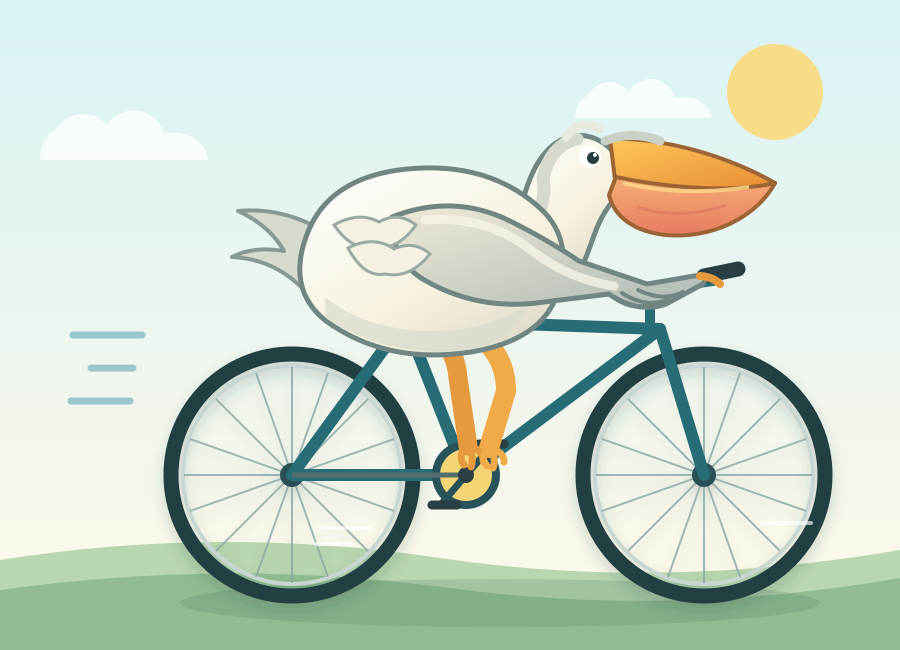
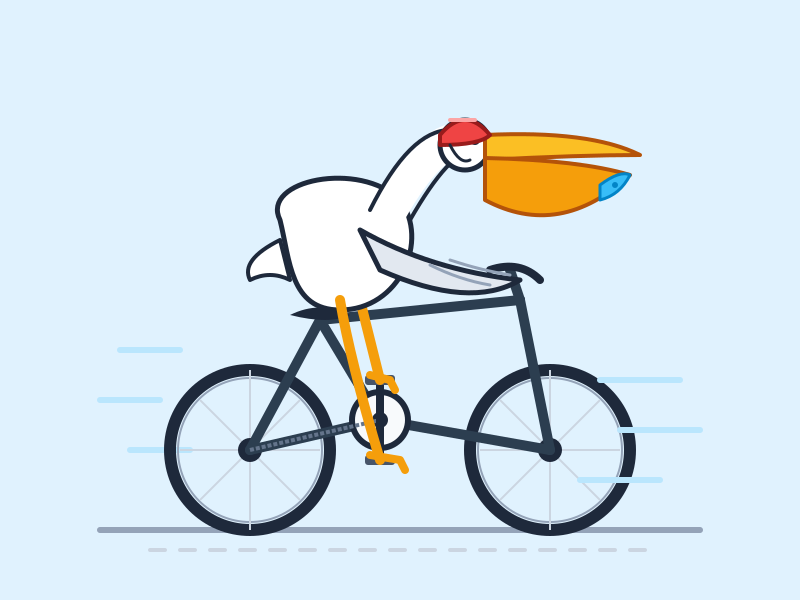
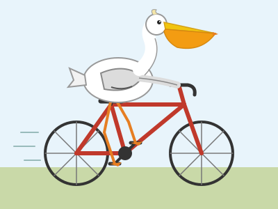

Хайп-тесты: MiniMax M3.1 Flash против DeepSeek V4.1 Flash и Opus 5.5
Одно задание — три модели, у всех уровень размышлений medium, один прогон. Код из ответов не правили. Исходники и замеры
20 мячей в крутящемся семиугольнике
Физика с нуля в одном HTML. Страницы работают прямо здесь.
MiniMax M3.1 Flash
147 с · мячи прыгают бесконечно
DeepSeek V4.1 Flash
45 с · мячи ложатся
Claude Opus 5.5
89 с · мячи ложатся
Пеликан на велосипеде (SVG)
MiniMax M3.1 Flash

33 с
DeepSeek V4.1 Flash

21 с
Claude Opus 5.5

21 с
Канал с тестами моделей: @neurostack_news